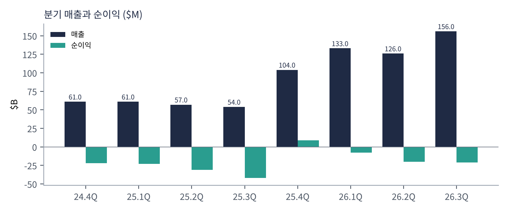
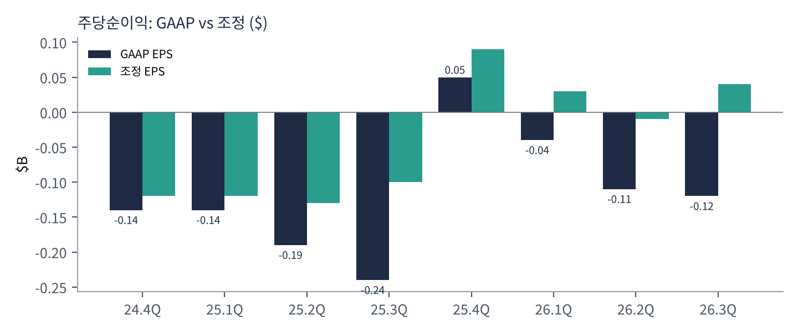
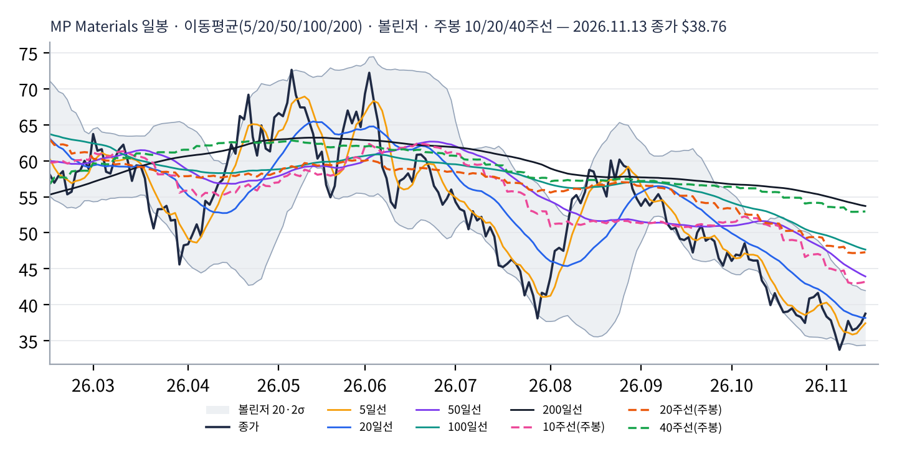
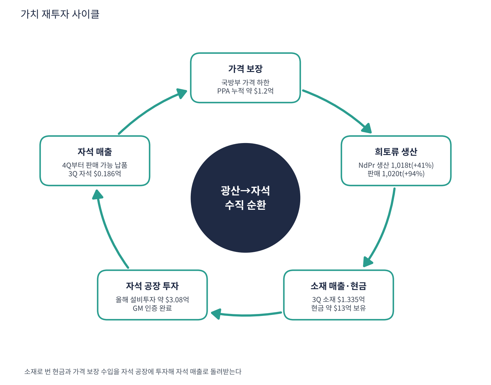

MP 머티리얼즈는 미국 캘리포니아 마운틴패스 광산에서 희토류를 캐 정제하고, 희토류 영구자석을 만드는 미국 유일 수준의 통합 희토류 회사다. 국방부가 가격 하한을 보장한다. 3분기 매출이 176% 늘고 조정 EPS가 흑자로 돌아섰지만, 일회성 매출과 가격 차액 수입이 섞여 있고 GAAP 기준으로는 여전히 적자인 회사다.
| 항목 | 내용 |
|---|---|
| 종목 | MP Materials (MP) · NYSE · 희토류·자석 · 본사 미국 네바다주 라스베이거스 |
| 밸류에이션 | PER 해당 없음(GAAP 적자) · P/S 12.89배 (11/13 종가 $38.76) |
| 최근 분기(3Q26) | 매출 $1.477억(+176%)에 가격 차액 수입(PPA) $0.081억을 더한 총 $1.558억, 순손실 $0.207억(EPS -$0.12), 조정 EPS $0.04, 조정 EBITDA $0.411억 |
| 생산·판매 | NdPr 생산 1,018t(+41%), 판매 1,020t(+94%). 소재 $1.335억, 자석 $0.186억 |
| 일회성 | 미국 항공우주 고객에 SEG+ 일회성 판매 $0.316억(CFO가 비반복이라고 설명, 보도) |
| 자석 일정 | GM 자석 인증 완료, 판매 가능한 납품과 매출은 4분기부터 시작(보도) |
| 현금·부채 | 현금 약 $13억, 총차입금 약 $10억(스캐너, 반올림. 차입금 구성은 확인하지 못함) |
| 직책 | 인물 | 역할·특징 |
|---|---|---|
| CFO | 라이언 코벳(Ryan Corbett) | SEG+ 판매가 비반복이라고 설명(보도) |
경영 스타일: '국방부 가격 보장과 정부 자금을 지렛대로 광산에서 자석까지 수직 계열화를 서두른다'. 올해 1~3분기 설비투자는 약 $3.08억으로 보도됐고 잉여현금은 적자다.
마운틴패스에서 캐낸 희토류를 정제해 NdPr 산화물과 영구자석을 만든다.
국방부 가격 하한이 가격을 받친다. 자석 판매가 4분기에 시작되면 소재에서 자석으로 무게가 옮겨간다.
다음 실적발표는 세 가지 질문에 답하는 자리다.
1. 자석 매출이 이번 분기에 개선되나?
2. 악재 '일회성 의존' 부담이 줄어드나?
3. 악재 '적자·잉여현금 적자' 부담이 줄어드나?
한 줄 판정 규칙: 첫 질문의 자석 매출이 좋아지면 약한 고리가 풀리고, 그렇지 않으면 현재 사이클의 약점이 그대로 남는다.
일정: 다음 발표일은 확인 필요(이번 분기 발표 후 일정 미확정). 위 현재값은 이 보고서의 기존 숫자다.
| 분기 | 매출 | 순이익 | EPS | 조정 EPS | 특이 사항 |
|---|---|---|---|---|---|
| 2024.4Q | $0.61억 | -$0.22억 | -0.14 | -0.12 | |
| 2025.1Q | $0.61억 | -$0.23억 | -0.14 | -0.12 | |
| 2025.2Q | $0.57억 | -$0.31억 | -0.19 | -0.13 | |
| 2025.3Q | $0.54억 | -$0.42억 | -0.24 | -0.10 | 순손실 최대(-$0.42억) |
| 2025.4Q | $1.04억 | +$0.09억 | 0.05 | 0.09 | 매출 전분기 대비 약 2배, 흑자(원인 미확인) |
| 2026.1Q | $1.33억 | -$0.08억 | -0.04 | 0.03 | |
| 2026.2Q | $1.26억 | -$0.20억 | -0.11 | -0.01 | |
| 2026.3Q | $1.56억 | -$0.21억 | -0.12 | 0.04 | 매출 +176%(전년), 일회성 $0.32억 포함, 조정 EPS 흑자 |


매출·순이익은 트레이딩뷰 스캐너 값(백만 달러 반올림)이다. 3Q26 매출은 보도 기준 $1.477억에 가격 차액 수입 $0.081억을 더해 $1.558억(스캐너 156)이다. GAAP EPS는 스캐너 값, 조정 EPS는 트레이딩뷰 실적 페이지의 'Reported' 값이다.
흐름 요약: 분기 매출은 $0.61억에서 $1.56억으로 늘었다. 4Q25에 $1.04억으로 뛰었고 이후 $1.33억, $1.26억, $1.56억이다. 순이익은 4Q25 +$0.09억 이후 다시 적자로 돌아서 3분기에 -$0.21억이다. 조정 EPS는 4Q25 $0.09, 1Q26 $0.03, 2Q26 -$0.01, 3Q26 $0.04로 흑자와 적자를 오간다. 영업이익과 분기 설비투자의 8분기 값은 구하지 못해 표에서 뺐다.
| 구분 | 내용 | 비고 |
|---|---|---|
| 소재(희토류 산화물 등) | 3Q 매출 $1.335억 | NdPr 산화물 판매 1,020t(+94%) |
| 자석 | 3Q 매출 $0.186억 | GM 인증 완료, 4Q부터 판매 가능한 납품 |
| 일회성 SEG+ 판매 | $0.316억 | 비반복(CFO). 3Q 매출에 포함 |
| 가격 차액 수입(PPA) | 3Q $0.081억(누적 약 $1.2억) | 국방부 가격 하한과 시장가 차이 |
3분기 매출의 약 20%가 일회성(SEG+)이다. 이를 빼면 3분기 매출은 약 $1.16억으로 2분기 $1.26억보다 낮다(내 계산, 일회성 $0.316억을 총 $1.477억에서 뺀 값).
MP의 방향은 '광산에서 자석까지 미국 내 공급망을 완성해 국방부 가격 보장 아래 부가가치를 올리는 것'이다.
| 축 | 최근 움직임 |
|---|---|
| 생산 | NdPr 생산 1,018t(+41%) |
| 가격 | 국방부 가격 하한, PPA 누적 약 $1.2억 |
| 자석 | GM 인증 완료, 4Q부터 납품 |
| 위험 | 적자·잉여현금 적자, 일회성 의존 |

| 이동평균 | 값 | 종가 대비 | 해석 |
|---|---|---|---|
| 5일선 | $37.43 | +3.6% | 현재가가 위 |
| 20일선 | $38.17 | +1.5% | 현재가가 위 |
| 50일선 | $43.93 | -11.8% | 현재가가 아래 |
| 100일선 | $47.67 | -18.7% | 현재가가 아래 |
| 200일선 | $53.72 | -27.8% | 현재가가 약 28% 아래 |
주봉 흐름: 2025년 9월 $66~82 → 10월 고점 $100.3 → 11월 $50~66 → 2026년 1월 $62~72 → 4월 $44~64 → 5월 고점 $76.8 → 7월 $38~47 → 8월 $41~62 → 10월 $37~48 → 11월 둘째 주 $31.9(저점) → 11/13 주 $38.8. 5일선·20일선은 현재가 아래, 50일선·100일선·200일선은 위에 있다.
| 규칙 | 기준 | 현재 값 | 신호 |
|---|---|---|---|
| 장기 추세 필터 | 종가 vs 200일선 | $38.76 < $53.72 | 매도 |
| 중장기 교차 | 50일선 vs 200일선 | $43.93 < $53.72 | 매도 |
| 단기 교차 | 20일선 vs 50일선 | $38.17 < $43.93 | 매도 |
| 돈키언 채널 | 55일 고가 $59.80 / 저가 $31.90 | 중간값 $45.85 아래 | 매도 |
| 1개월 모멘텀 | 21거래일 수익률 | -6.8% (기준 $41.61) | 매도 |
| 3개월 모멘텀 | 63거래일 수익률 | -33.8% (기준 $58.51) | 매도 |
| 6개월 모멘텀 | 126거래일 수익률 | -36.7% (기준 $61.27) | 매도 |
| 12개월 모멘텀 | 252거래일 수익률 | -35.1% (기준 $59.72) | 매도 |
| 종합 (8개 평균) | -1.00 | 강한 매도 |
해석: 8개 신호가 모두 매도(점수 -1.00)다. 14일 ATR $2.70 (7.0%)로 변동폭이 크다.
| 가격 | 무엇이 바뀌나 | 의미 |
|---|---|---|
| $41.6 돌파 | 1개월 기준가 | 1개월 모멘텀 매도 → 매수 |
| $43.9 돌파 | 50일선 | 20/50 신호는 20일선($38.2)이 50일선을 넘어야 전환 |
| $45.9 돌파 | 돈키언 중간값 | 채널 신호 매도 → 매수 |
| $53.7 돌파 | 200일선 | 장기 추세 신호 매도 → 매수 |
| 구분 | 가격대 | 근거 |
|---|---|---|
| 저항 1 | $41.6 ~ 43.9 | 1개월 기준가, 50일선 |
| 저항 2 | $45.9 ~ 53.7 | 돈키언 중간값, 200일선 |
| 지지 1 | $31.9 | 52주 저점(11/5) |
| 하방 | $31.9 이탈 시 | 신저가, 직전 기준 가격대 없음 |
8개 신호가 모두 매도라 신규 진입은 보류한다. 50일선($44)을 되찾고 20/50 신호가 바뀌는지 확인한 뒤 계획 비중의 30%만 진입한다. 이미 보유 중이면 52주 저점 $31 종가 이탈 시 정리한다. 4분기 자석 납품 소식이 확인 지점이다.
| 악재 요인 | 내용 | 강도 |
|---|---|---|
| 일회성 의존 | 3Q 매출·이익에 SEG+ $0.32억 포함, 비반복 | 높음 |
| 적자·잉여현금 적자 | GAAP 순손실, TTM 잉여현금 약 -$5억 | 높음 |
| 정부 가격 보장 의존 | PPA 누적 약 $1.2억, 계약 조건 변경 위험 | 중간 |
| 자석 일정 | 판매 가능한 납품이 4분기부터, 지연 가능성 | 중간 |
| 추세 | CTA -1.00, 8개 신호 모두 매도 | 높음 |
| 티커 | 회사 | PER(TTM) | PEG | P/S | EPS 성장(YoY) |
|---|---|---|---|---|---|
| MP | MP 머티리얼즈 | 적자 | – | 12.89배 | – |
| USAR | USA 레어 어스 | 적자 | – | 142.96배 | – |
| ALB | 앨버말 | 24.4배 | – | 1.83배 | – |
모두 트레이딩뷰 스캐너 기준(PEG·EPS 성장률은 적자·왜곡으로 비움). 사업 구조가 달라 참고용이다. 비교 결론: MP의 P/S는 USAR보다 낮고 ALB보다 훨씬 높다.
MP는 현금 약 $13억에 차입금 약 $10억이고, 최근 4분기 잉여현금이 약 -$5억으로 적자다. 투자 규모가 크지만 현금 쿠션은 두껍다.
| 지표 | 값 | 계산·출처 | 해석 |
|---|---|---|---|
| 현금 등 | 약 $13억 | 스캐너(반올림) | |
| 총차입금 | 약 $10억 | 스캐너(반올림) | 구성은 확인하지 못함 |
| 순현금 | 약 $3억 | 내 계산 | 반올림 값이라 오차 큼 |
| TTM 잉여현금흐름 | 약 -$5억 | 스캐너 | 설비투자가 영업현금을 앞섬 |
| TTM EBITDA(GAAP) | 약 $1억 | 스캐너 | 3Q 조정 EBITDA $0.411억에는 일회성 포함 |
| 가정 | 분기 현금 사용 | 남은 분기 | 비고 |
|---|---|---|---|
| TTM 잉여현금 -$5억 지속 | 약 $1.25억 | 약 10분기 | 현금 $13억 기준, 차입금 상환 제외 |
| 올해 설비투자 속도 약 $1.03억/분기만 사용 | 약 $1.03억 | 약 12분기 | 영업현금 0 가정, 보도 기준 |
| 기준 | 값 | 비고 |
|---|---|---|
| P/S (스캐너) | 12.89배 | 트레이딩뷰 값 |
| P/S (TTM 매출 $5.19억) | 약 13.3배 | 매출 $5.19억(내 계산) |
| EV / TTM 매출 | 약 12.7배 | EV(차입금 $10억 − 현금 $13억 반영)(내 계산) |
| 동종 | USAR 143, ALB 1.8 | 11/13 스캐너. 사업 구조가 달라 참고용 |
해석: 런웨이는 10분기 안팎으로 길지만 매출의 질이 중요하다. 스트레스 가정(TTM 매출 $5.19억에 EV/매출 6·10·15배, 순현금 $3억, 주식 약 1.78억 주 고정, 내 가정): 6배면 약 $19(-51%), 10배면 약 $31(-20%), 15배면 약 $46(+17%)이다. 주식 수는 주가로 추정한 값이라 오차가 있다.
| 지표 | 값 | 판정 |
|---|---|---|
| PER | 해당 없음 | GAAP TTM EPS -$0.23(적자) |
| PER (조정 TTM) | 약 258배 | 최근 4분기 조정 EPS 합 $0.15, 의미 낮음(내 계산) |
| EV / EBITDA | 약 66배(참고) | EV $66억 ÷ TTM GAAP EBITDA $1억(반올림, 내 계산). 일회성·PPA 포함이라 의미 낮음 |
| 방식 | PER | EPS 성장률 | PEG | 판정 |
|---|---|---|---|---|
| 트레이딩뷰 (GAAP TTM) | 적자 | – | 산출 불가 | GAAP EPS가 음수 |
| 조정 EPS 기준 | 약 258배 | 직전 TTM이 음수(-$0.47) | 산출 불가 | 직전 TTM이 적자여서 성장률이 정의되지 않음 |
판정: PEG는 산출 불가다. 조정 EPS도 분기마다 부호가 바뀐다. 판단 기준은 자석 매출 시작, 가격 보장 유지, 일회성 제외 후 이익 지속이다.

MP의 사이클은 가격 보장 → 희토류 생산 → 소재 매출·현금 → 자석 공장 투자 → 자석 매출이다. 소재로 번 현금을 자석에 다시 투자해 더 높은 부가가치 매출로 돌려받는 구조다. 약한 고리는 자석 매출 시작 전의 공백이다.
| 고리 | 현재 숫자 | 고리 강도 | 약해지는 신호 |
|---|---|---|---|
| ① 가격 보장 | 국방부 가격 하한, PPA 누적 약 $1.2억 | 강함 | 계약 조건 변경 |
| ② 희토류 생산 | NdPr 생산 +41%, 판매 +94% | 강함 | 가동 차질 |
| ③ 소재 매출·현금 | 3Q 소재 $1.335억, 현금 약 $13억 | 보통 | 일회성 제외 시 2분기보다 낮음 |
| ④ 자석 공장 투자 | 올해 설비투자 약 $3.08억(보도) | 보통 | 잉여현금 적자 확대 |
| ⑤ 자석 매출 | GM 인증 완료, 4Q 납품 시작 | 약함 | 납품 지연 |
구조: ①②가 강하고 ⑤가 아직 시작 전이다. 자석 매출이 실제로 늘어야 ③→④→⑤ 순환이 닫힌다.